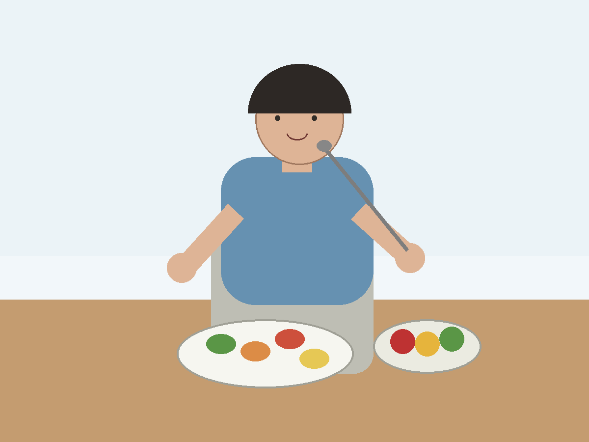
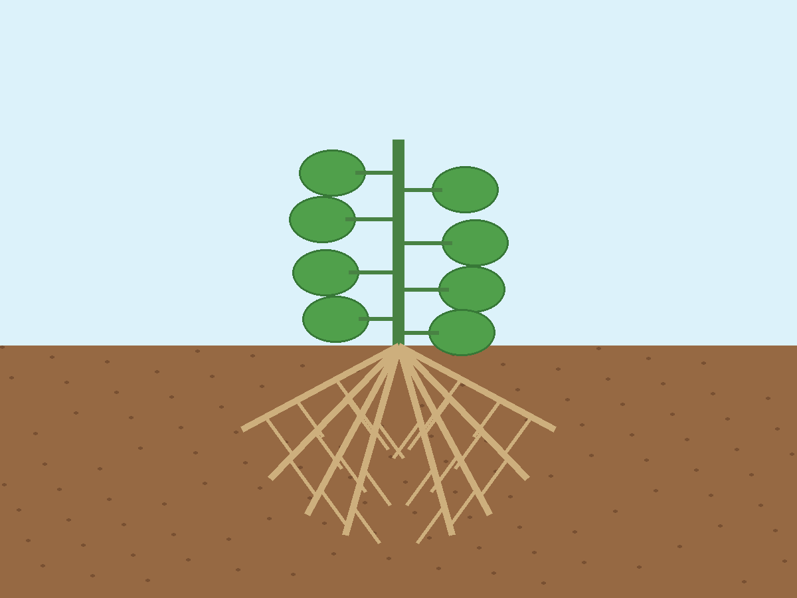

Khám phá bốn dấu hiệu đặc trưng diễn ra từ khi sinh vật tiếp nhận, vận chuyển, biến đổi chất cho đến khi thải chất và điều hoà hoạt động sống.
“Chúng ta không nhìn thấy trực tiếp mọi quá trình diễn ra bên trong cơ thể. Vậy dựa vào những biểu hiện nào, chúng ta có thể nhận biết sinh vật đang trao đổi chất và chuyển hoá năng lượng?”
Quan sát người và cây trong hai hình dưới đây. Hãy khám phá từng vị trí để xem những hoạt động nào đang diễn ra.

